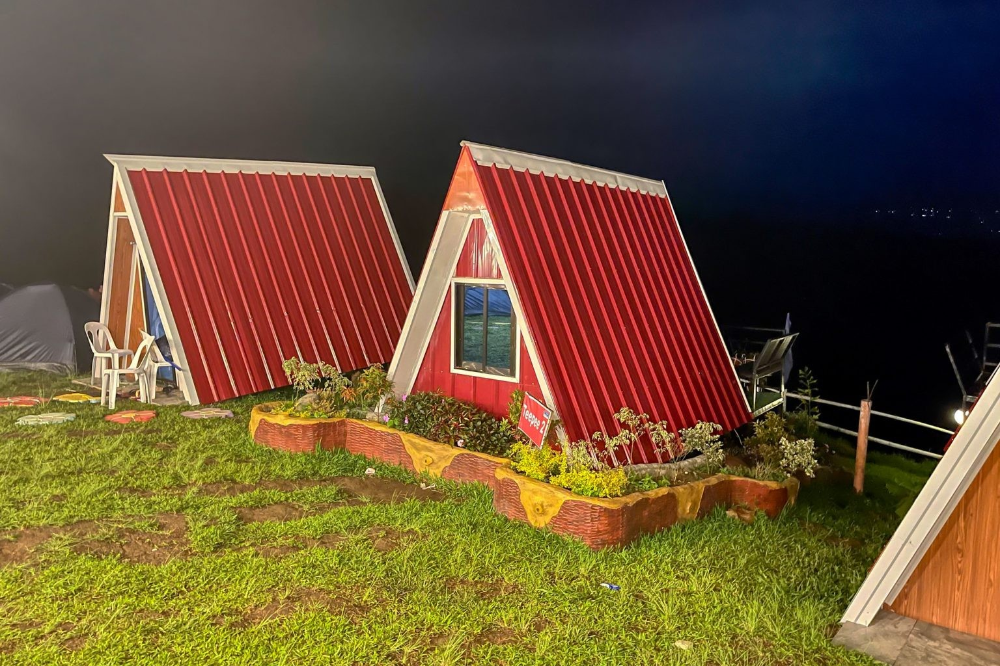
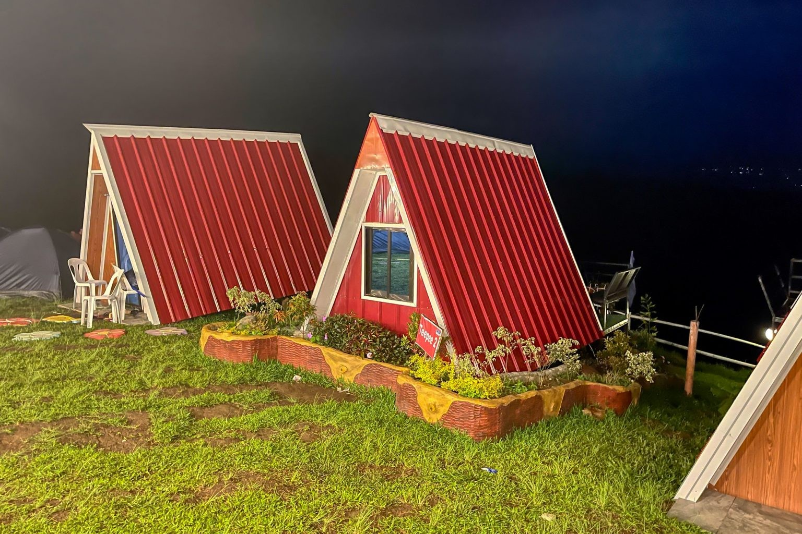

Lantapan, Bukidnon
Lantaw 360 Camp and Café is a relaxing hilltop destination known for its 360-degree mountain views, cozy cafés, and chill atmosphere. Situated in Lantapan, this spot offers cabins, tent areas, and a café overlooking the Kitanglad and Kalatungan ranges. It’s great for unwinding with food and coffee. Guests can enjoy spectacular sunsets that paint the mountains in golden hues, perfect for photography enthusiasts. The campsite is also ideal for stargazing at night, with minimal light pollution revealing the Milky Way. Friendly staff and well-maintained facilities make it a comfortable base for both day-trippers and overnight campers seeking a peaceful mountain retreat.
Enjoy meals and drinks while overlooking stunning 360° scenery.
Capture wide mountain landscapes perfect for travel content.
Relax in Lantapan’s refreshing highland breeze.
Relax in Lantapan’s refreshing highland breeze.
Stay the night and experience the peaceful hillside atmosphere.
Looking for a café with an unforgettable view?
Visit Lantaw 360 today!
Lantaw 360 Camp and Café blends good food, cold climate, and stunning views—making it one of Lantapan’s most relaxing hangout spots.
 
